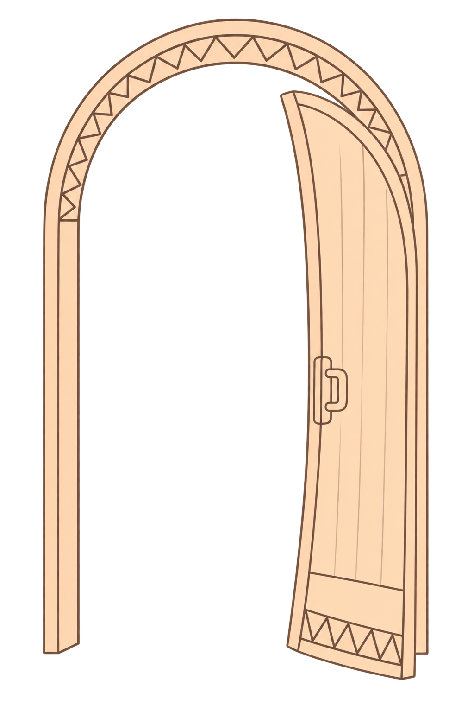

Visuelt udtryk for din praksis

Alt det du viser frem fra din praksis
Et sammenhængende visuelt udtryk hjælper dig med at vise, hvem du er, og hvad dine kunder kan forvente af dig.
Farver, billeder, logo og grafiske detaljer er med til at skabe genkendelighed og tillid. Når de forskellige dele spiller sammen, får du et tydeligere udtryk for din praksis - både online og i din klinik.
I dette vækstrum arbejder du med de visuelle elementer, der tilsammen fortæller historien om din praksis. Du får hjælp til at finde en retning, træffe bevidste valg og skabe sammenhæng i det, du viser frem.
Undervejs samler vi dine valg i en visuel styleguide, som du kan bruge fremover, når du skal udvikle din praksis og holde en rød tråd i dit visuelle udtryk.